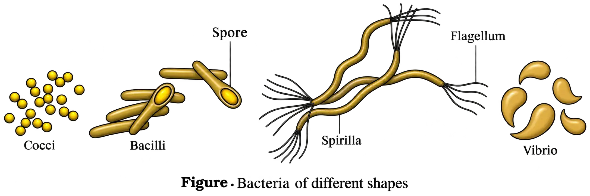
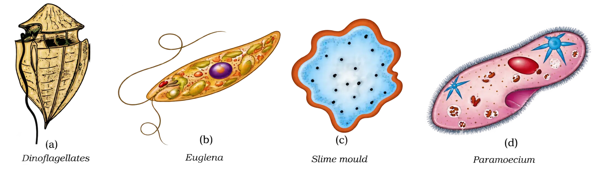
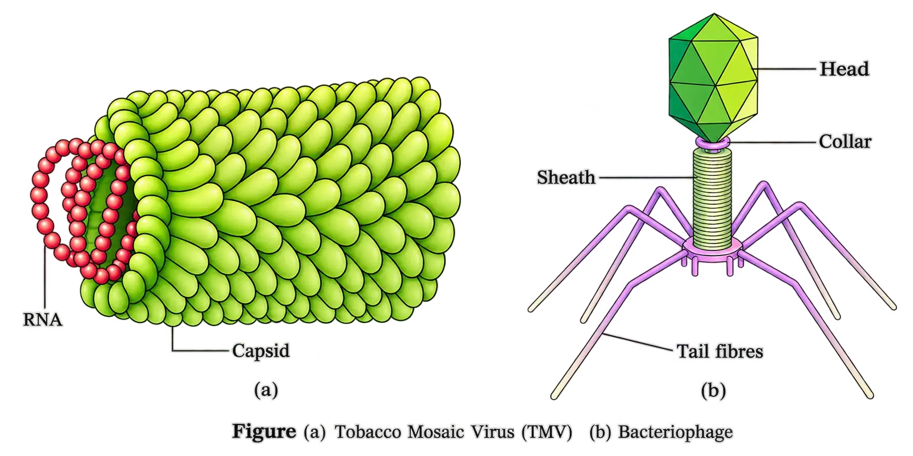

Biological Classification: Need, History & Changing Criteria
Biological Classification: Need, History & Changing Criteria
Biological classification = arranging living organisms into groups based on shared characteristics. Human attempts began “instinctively” (non-scientific), driven by utility (food, shelter, clothing). With time, classification shifted toward scientific criteria and evolutionary relationships.
Think of it like sorting a huge library: first by “what helps me now” (usefulness), later by “what it truly is” (scientific + evolutionary relatedness).
Early attempts: Aristotle
Plantsclassified as trees, shrubs, herbs (simple morphology)
Animalsdivided into red-blooded vs not red-blooded
Two-Kingdom Classification (Linnaeus)
Two-Kingdom system (developed in Linnaeus’ time): all organisms placed into either Kingdom Plantae or Kingdom Animalia.
Why it became inadequate: It did not distinguish between key biological differences:
- Eukaryotes vs prokaryotes
- Unicellular vs multicellular
- Photosynthetic organisms (e.g., green algae) vs non-photosynthetic organisms (e.g., fungi)
Expansion of classification criteria beyond gross morphology
- Cell structure
- Nature of cell wall
- Mode of nutrition
- Habitat
- Methods of reproduction
- Evolutionary (phylogenetic) relationships
⚠ Exam trap: “Plant” and “animal” kingdoms remained present across systems, but which organisms belong to them and the number/nature of other kingdoms changed as criteria improved.
Whittaker’s Five Kingdom Classification (1969)
R.H. Whittaker (1969) proposed the Five Kingdom Classification: Monera, Protista, Fungi, Plantae, Animalia.
Main criteria used by Whittaker
- Cell structure
- Body organisation
- Mode of nutrition
- Reproduction
- Phylogenetic relationships (evolutionary relationships)
Three-domain system (context only)
A three-domain system has also been proposed in which Kingdom Monera is split into two domains, and the remaining eukaryotic kingdoms fall into a third domain, effectively giving a six-kingdom classification. (Details are deferred to higher classes.)
Why earlier “Plants” grouping caused problems (and what Whittaker fixed)
Earlier “Plants” = all with cell wall
→Mixed very different groups
→Need for new kingdoms based on deeper criteria
- Prokaryotes (bacteria, cyanobacteria/blue-green algae) were grouped with eukaryotes (many algae, fungi, land plants).
- Unicellular and multicellular forms were mixed (e.g., Chlamydomonas and Spirogyra both placed under algae).
- Heterotrophs (fungi) were not separated from autotrophs (green plants), despite major differences, including cell wall chemistry.
Cell wall composition difference that supported separation:
Considering such characteristics led to placing fungi in a separate kingdom (Kingdom Fungi).
Fungicell wall contains chitin
Green plantscell wall is cellulosic (cellulose)
Comparative characteristics of the Five Kingdoms (Table 2.1 content)
Five-kingdom comparison must be learnt as a set of linked features: cell type, cell wall, nuclear membrane, body organisation, and mode of nutrition.
MoneraProkaryotic; wall non-cellulosic (polysaccharide + amino acid); nuclear membrane absent; body organisation cellular; nutrition autotrophic (chemosynthetic/photosynthetic) and heterotrophic (saprophytic/parasitic)
ProtistaEukaryotic; cell wall present in some; nuclear membrane present; body organisation cellular; nutrition autotrophic (photosynthetic) and heterotrophic
FungiEukaryotic; wall present with chitin; nuclear membrane present; body organisation multicellular/loose tissue; nutrition heterotrophic (saprophytic/parasitic)
PlantaeEukaryotic; wall present (cellulose); nuclear membrane present; body organisation tissue/organ; nutrition autotrophic (photosynthetic)
AnimaliaEukaryotic; wall absent; nuclear membrane present; body organisation tissue/organ/organ system; nutrition heterotrophic (holozoic/saprophytic etc.)
⚠ Exam tip: Do not write “all protists have a cell wall.” Correct: cell wall present in some. Also, Monera = prokaryotic = nuclear membrane absent is a frequent 1-mark check.
Kingdom Protista as a “new grouping” under changed criteria
- Chlamydomonas and Chlorella: earlier placed in algae within Plants (both have cell walls).
- Paramoecium and Amoeba: earlier placed in Animal kingdom (lack cell wall).
This mixing happened because classification criteria changed. Such changes can continue in the future as understanding of characteristics and evolutionary relationships improves.
Modern goal: phylogenetic classification
Over time, classification aims to reflect not only morphological, physiological, and reproductive similarities but also be phylogenetic—i.e., based on evolutionary relationships.
Scope note for this chapter
- Kingdom Monera
- Kingdom Protista
- Kingdom Fungi
Kingdom Monera: Bacteria (Introduction)
Occurrence and abundance
- Most abundant micro-organisms
- Occur almost everywhere
- Hundreds may be present in a handful of soil
- Live in extreme habitats: hot springs, deserts, snow, deep oceans (where few life forms survive)
- Many live in or on other organisms as parasites
Classification of bacteria based on shape (Figure 2.1)

Coccusspherical; plural: cocci
Bacillusrod-shaped; plural: bacilli
Vibriumcomma-shaped; plural: vibrio
Spirillumspiral; plural: spirilla
Co-Ba-Vi-Spi
Biological Classification: Bacteria (overview)
- Structure: very simple
- Behaviour/metabolism: very complex; as a group they show the most extensive metabolic diversity compared to many other organisms
Nutrition in bacteria: Autotrophs vs heterotrophs
Photosynthetic autotrophsUse light energy to synthesise food
Chemosynthetic autotrophsUse energy released by oxidising inorganic substances
Archaebacteria
HalophilesLive in extremely salty areas
ThermoacidophilesLive in hot springs
MethanogensLive in marshy areas; produce methane
Eubacteria (“true bacteria”)
General characteristics
- Cell wall: rigid cell wall present
- Motility: if motile, they have a flagellum
Cyanobacteria (blue-green algae)
OrganisationUnicellular / Colonial / Filamentous
HabitatFreshwater / Marine / Terrestrial
Colony featureOften surrounded by a gelatinous sheath
- Examples (heterocystous N2-fixers): Nostoc, Anabaena
Chemosynthetic autotrophic bacteria
- They oxidise substances such as nitrates, nitrites and ammonia.
Heterotrophic bacteria: importance and harm
Useful rolesCurd formation; antibiotic production; nitrogen fixation in legume roots
Harmful rolesPathogens of humans, crops, farm animals and pets
- Helpful examples/uses: making curd from milk; production of antibiotics; fixing nitrogen in legume roots
- Pathogenic examples (diseases): cholera, typhoid, tetanus, citrus canker
Reproduction in bacteria
Favourable conditions
→Fission (main method)
Unfavourable conditions
→Spore formation
Bacterium A
→DNA transfer
→Bacterium B
Mycoplasma
- Smallest living cells known
- Can survive without oxygen
- Many are pathogenic in animals and plants
Kingdom Protista
- Habitat: primarily aquatic
- Linking role: connects features of kingdoms dealing with plants, animals and fungi
General features of protists
- a well-defined nucleus
- membrane-bound organelles
- in some, flagella or cilia
- Asexual methods
- Sexual methods involving cell fusion and zygote formation
Chrysophytes
Diatomsmajor chrysophyte group
Golden algae (desmids)major chrysophyte group
- Habitat: fresh water + marine
- Size/position: microscopic; float passively as plankton
- Nutrition: most are photosynthetic
Diatoms: cell wall structure and significance
- Polishing
- Filtration of oils and syrups
Dinoflagellates
Cell covering and flagella arrangement
Longitudinal flagellumruns along the length
Transverse flagellumlies in a furrow between wall plates
Red tides and toxicity
- Example: Gonyaulax
Euglenoids
Pellicle (in place of a cell wall)
Flagella and nutrition (mixotrophy)
Sunlight present
→Photosynthetic
Sunlight absent
→Heterotrophic (predates on smaller organisms)
- Example: Euglena
Slime Moulds
Feeding and movement
Plasmodium formation and spore-bearing fruiting bodies
- Spores have true walls
- Extremely resistant—can survive for many years even under adverse conditions
- Dispersal: spores are dispersed by air currents
Protozoans
Amoeboid protozoans
Protozoans (continued): Major Groups & Key Features
Sarcodines (Amoeboid protozoans): pseudopodia, shells, parasitism
Nutrition/feedingengulf prey using pseudopodia
Marine formsoften have silica shells on their surface
Parasitic memberse.g., Entamoeba
Flagellated protozoans: flagella; free-living or parasitic; disease
Ciliated protozoans: cilia-driven feeding via gullet
- Gullet (cavity): a cavity that opens to the outside of the cell surface.
Rows of cilia beat in coordination
→
Water + food are steered inward
→
Food enters the gullet
- Example: Paramoecium (Paramecium).
Sporozoans: infectious spore-like stage; malaria

Kingdom Fungi (2.3): Characteristics, Structure, Nutrition, Symbiosis & Reproduction
General nature, diversity, occurrence, and importance
On foodmoist bread; rotten fruits
Edible formsmushrooms; toadstools (fungi)
Plant infectionwhite spots on mustard leaves (parasitic fungus)
Industryyeast used in bread and beer
Diseaseswheat rust: Puccinia
Medicinesantibiotics: Penicillium
- Cosmopolitan distribution: occur in air, water, soil, and on plants and animals.
- Preferred conditions: grow best in warm and humid places.
Body organisation: hyphae, mycelium, septate vs coenocytic; cell wall
Hyphae
thread-like filaments
→
thread-like filaments
Mycelium
network of hyphae
network of hyphae
Coenocytic hyphaecontinuous tubes with multinucleated cytoplasm (aseptate)
Septate hyphaehyphae have septae (cross walls)
Modes of nutrition: saprophytes, parasites, symbionts (lichens, mycorrhiza)
Saprophytesabsorb soluble organic matter from dead substrates
Parasitesdepend on living plants/animals
Symbiontsmutual association with other organisms
- Lichens: fungal association with algae.
- Mycorrhiza: fungal association with roots of higher plants.
Reproduction in fungi: vegetative, asexual, sexual; fruiting bodies
Vegetative reproductionfragmentation; fission; budding
Asexual reproductionconidia; sporangiospores; zoospores
Sexual reproductionoospores; ascospores; basidiospores
Sexual cycle (three steps): plasmogamy → karyogamy → meiosis
(i) Plasmogamy
fusion of protoplasms between two motile/non-motile gametes
→
fusion of protoplasms between two motile/non-motile gametes
(ii) Karyogamy
fusion of two nuclei
→
fusion of two nuclei
(iii) Meiosis
in zygote producing haploid spores
in zygote producing haploid spores
PKM
Dikaryon and dikaryophase (n + n): where it occurs and significance
- In some fungi, fusion of haploid cells leads immediately to diploid (2n) cells.
- In ascomycetes and basidiomycetes, there is an intervening dikaryotic stage where each cell contains two nuclei (n + n).
Parental nuclei remain separate
dikaryon (n + n)
→
dikaryon (n + n)
Karyogamy
diploid cells form
→
diploid cells form
Fruiting bodies develop
meiosis occurs inside
→
meiosis occurs inside
Haploid spores produced
reduction division (meiosis)
reduction division (meiosis)
Basis of fungal classification
Mycelium morphologyoverall structure/organisation
Mode of spore formationhow spores are produced
Type of fruiting bodiesstructures bearing spores
Classes of Fungi (2.3.1–2.3.4)
Phycomycetes (2.3.1): habitat, mycelium type, spores, sexual reproduction, examples
HabitatAquatic / moist decaying wood / obligate plant parasites
Myceliumaseptate + coenocytic
Asexual sporeszoospores (motile) / aplanospores (non-motile)
Spore formation siteendogenous spores inside sporangium
Sexual reproductionfusion of gametes → zygospore
- Isogamous: gametes similar in morphology
- Anisogamous: gametes dissimilar
- Oogamous: a type of dissimilar gametes (egg and sperm-type)
Mucorcommon phycomycete
Rhizopusbread mould
Albugoparasitic fungus on mustard
.webp)
Ascomycetes (2.3.2): sac fungi; lifestyle; conidia & asci; ascocarps; examples & uses
Modes of lifesaprophytic / parasitic / coprophilous (on dung)
Myceliumbranched + septate
- Asexual spores: conidia
- Where formed: produced exogenously on special mycelium called conidiophores
- After germination: conidia germinate to form mycelium
- Sexual spores: ascospores
- Where formed: produced endogenously in sac-like asci (singular: ascus)
- Fruiting body: asci are arranged into ascocarps
Aspergillusascomycete example
Clavicepsascomycete example
Neurosporaused in biochemical & genetic work
- Edible ascomycetes: morels and truffles (considered delicacies).
Basidiomycetes (2.3.3): mushrooms/rusts/smuts; dikaryon; basidium & basidiospores; basidiocarp
Habitatsoil / logs / tree stumps; also inside living plant bodies (parasitic)
Myceliumbranched + septate
Asexual sporesgenerally absent
Vegetative reproductioncommonly by fragmentation
Sex organs absent
→
Plasmogamy: fusion of 2 vegetative/somatic cells (different strains/genotypes)
→
Dikaryotic structure forms
→
Gives rise to basidium
→
In basidium: karyogamy then meiosis
→
Product: four basidiospores
- Spore position: basidiospores are produced exogenously on the basidium (plural: basidia).
- Fruiting body: basidia are arranged in basidiocarps.
Agaricusmushroom
Ustilagosmut
Pucciniarust fungus
Deuteromycetes (2.3.4): imperfect fungi; naming issue; conidia only; ecological role; examples
A “temporary folder” in classification: once the sexual stage is discovered, the fungus gets shifted to its correct group (often ascomycetes or basidiomycetes).
Reproductiononly asexual spores called conidia
Myceliumseptate + branched
Nutrition/ecologysaprophytes or parasites; many are decomposers of litter aiding mineral cycling
Alternariadeuteromycete example
Colletotrichumdeuteromycete example
Trichodermadeuteromycete example
Kingdom Plantae
General characteristics
Cell typeeukaryotic cells with prominent chloroplasts
Cell wallpresent; mainly made of cellulose
Nutritionmostly autotrophic (photosynthetic), but some are partially heterotrophic
- Insectivorous plants (supplement nutrients by trapping insects): Bladderwort, Venus fly trap.
- Parasitic plants (derive nutrition from host): Cuscuta.
Major groups included in Plantae
AlgaePlant kingdom group
BryophytesPlant kingdom group
PteridophytesPlant kingdom group
GymnospermsPlant kingdom group
AngiospermsPlant kingdom group
Alternation of generations
- Diploid sporophytic phase (2n)
- Haploid gametophytic phase (n)
Kingdom Animalia
Nutrition and storage
Dependence for fooddirectly or indirectly depend on plants for food
Digestionfood digested in an internal cavity
Reserve foodstored as glycogen or fat
Growth, coordination and movement
Growth patterndefinite; adults have definite shape and size
Higher formselaborate sensory + neuromotor mechanisms
Locomotionmost are capable of locomotion
Reproduction
Copulation (male + female)
→Sexual reproduction
Fertilisation
→Embryological development
Viruses, Viroids, Prions and Lichens
- Lichens
- Some acellular organisms: viruses, viroids, prions
Viruses
Historical milestones and terminology
Meaning of “virus”venom or poisonous fluid
Dmitri Ivanowsky (1892)tobacco mosaic disease microbe passed through bacteria-proof filters → smaller than bacteria
M.W. Beijerinck (1898)infected extract infects healthy plants; named “virus”; Contagium vivum fluidum
W.M. Stanley (1935)viruses can be crystallised; crystals largely proteins
Structure and genetic material
Plant virusesgenerally single-stranded RNA (ssRNA)
Animal virusesssRNA or double-stranded RNA or double-stranded DNA (dsDNA)
Bacteriophages(infect bacteria) usually dsDNA
Capsid, capsomeres and symmetry
- Arrangement of capsomeres: in helical or polyhedral geometric forms.
Diseases caused by viruses
Human diseasesmumps, small pox, herpes, influenza; AIDS also caused by a virus
Plant symptomsmosaic formation; leaf rolling & curling; yellowing; vein clearing; dwarfing; stunted growth

Viroids
- Composition: free RNA only.
- No protein coat (unlike viruses) → hence the name viroid.
- RNA has low molecular weight.
Prions
- Bovine spongiform encephalopathy (BSE) = “mad cow disease” in cattle
- Analogous human disease: Creutzfeldt–Jacob disease (CJD)
Lichens
- Phycobiont = algal component (autotrophic)
- Mycobiont = fungal component (heterotrophic)
Algae (phycobiont)
→Prepare food for fungus
Fungus (mycobiont)
→Provides shelter + absorbs minerals & water
Chapter wrap-up (key classification takeaways from this portion)
Plantaeeukaryotic, chlorophyll-containing; cellulose cell wall; includes algae → angiosperms; life cycle shows alternation of generations (gametophyte n and sporophyte 2n)
Animaliamulticellular eukaryotic heterotrophs; no cell wall; holozoic ingestion; internal digestion; store glycogen/fat; usually locomotory; sexual reproduction by copulation + embryological development
Viruses/viroids/prionsacellular infectious agents not placed in Whittaker’s five kingdoms; viruses are nucleoproteins with either RNA or DNA (not both); viroids are free RNA without protein coat; prions are abnormally folded proteins causing BSE/CJD
Lichenssymbiosis of algae (phycobiont) and fungi (mycobiont); pollution indicators